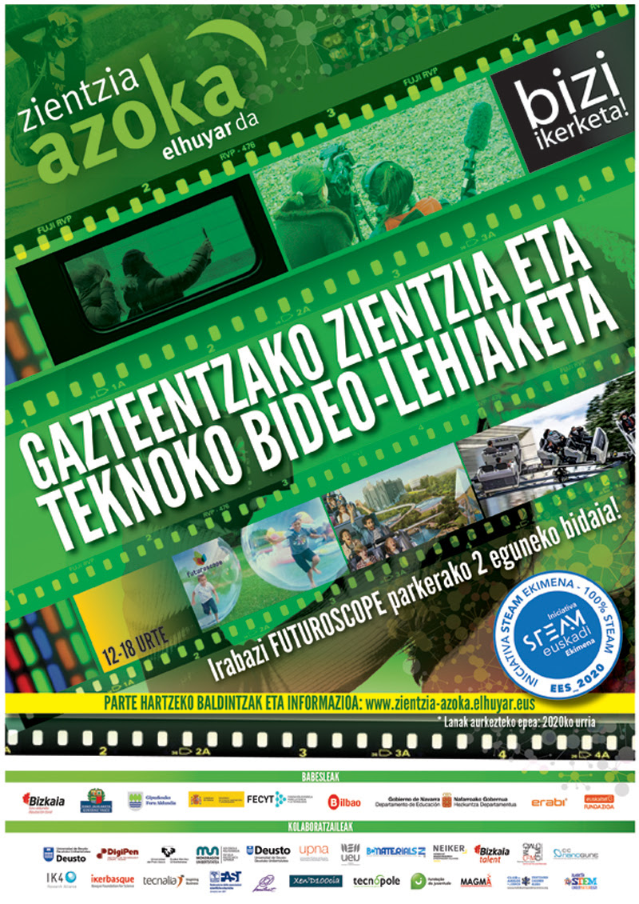

Ikasleak
Hurrengo ostiralean, urtarrilak 28 CIFP Txurdinaga zentroan txokolatada egongo da erdi mailako lehenengo eta bigarren urteko ikasleontzat.
URT.24
Finantzak
Otsailak 7an, astelehena finantzak ikastaroko ikasleak ireera bat izango dute Wall Street-era.
URT.18
Ikasleak
Urtarrilak 26an irakasle greba egongo da. Derrigorrezkoa da ikasleak klasera etortzea, egun normala balitz bezala.
URT.12
Finantzak
Finantzak ikastaroaren ikasleen artean TxurdiWin lehiaketa ospatuko da otsailak 10ean.
URT.09
COVID bidezko heriotzen gorakada Hego Euskal Herrian, ziurtatutako positiboen beherakada gorabehera
Ez da ohikoa, eta tendentzia aldaketa bat erakusten du: Covid-19ak erabat baldintzatutako urteak izan arren, kontratu asko esleitu ditu Galdakaoko Udalak; herrian alor eta mota guztietako lanak egin ...
URT.02
Korrikaren lekukoak CIFP Txurdinaga ikastetxeak eramango du urte honetan.
Korrikaren ibilbidearen berri eman dute: Mendebaldean hasiko da, eta Gasteiz izango da igaroko duen lehen hiriburua. 2.180 kilometro eginda, Donostiara iritsiko da lasterketa...
URT.02
Gaurtik, 18 urtetik gorakoek hirugarren dosia jartzeko ordua har dezakete Euskal Herri osoan
Gaurtik aurrera, 18 eta 29 urte bitarteko gazteei ere hasiko zaizkie bidaltzen COVID-19aren hirugarren txertoa jartzeko SMS mezua Hego Euskal Herrian. Iparraldean, berriz, aukera hori zabalik da azaro bukaeratik. ...
URT.02